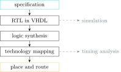

Model
Levels, with their basic objects:
| level | objects | tools |
|---|---|---|
| system / behaviour | algorithms, data-flow graphs | high-level synthesis |
| architecture (RTL) | registers, ALUs, muxes, FSMs | VHDL, simulation |
| logic | gates, flip-flops | logic synthesis, mapping |
| circuit | transistors | circuit simulation |
| layout | cells, wires, polygons | place and route |
A typical flow: specification → HDL description at RTL → functional simulation → logic synthesis (optimisation + mapping to a library or to FPGA LUTs) → static timing analysis → place and route → timing and power sign-off → fabrication or bitstream.
What to optimize
- area: cost (silicon or FPGA resources);
- delay: clock period
 , latency (cycles × ), throughput;
, latency (cycles × ), throughput; - power: dynamic and static, decisive for battery-powered and dense chips.
They conflict: a faster circuit is bigger, a lower-power circuit is slower. Design is choosing a point on the Pareto front.
Picture

Intuition
Every level hides the details of the one below. Designers think in registers and operations; tools turn them into gates and wires.
Pitfall
Decisions at higher levels have larger effect: no gate-level optimisation recovers an architecture that does too much work per cycle.